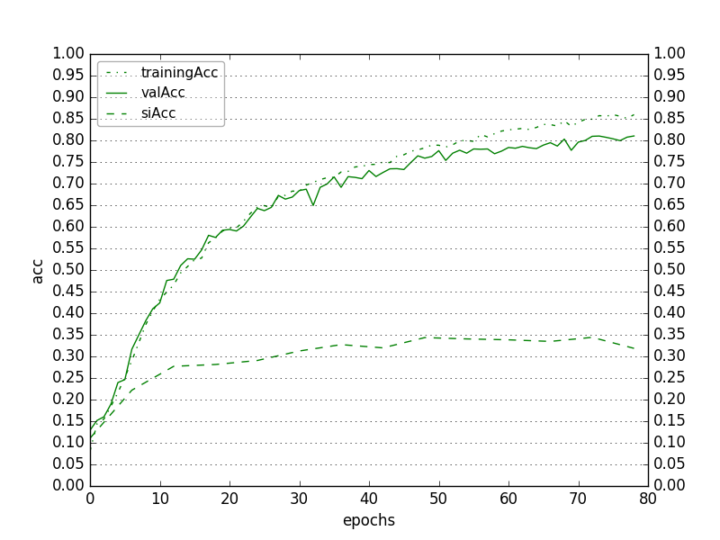

Changed output to only softmax of words vocabulary
Accuracies in paper: LIPREADING WITH LONG SHORT-TERM MEMORY:
Using LipReader "LSTM-noPadResults-h256-depth2-LSTMactivtanh-enc64-encodedActivsigmoid-Adam-1e-03-GRIDcorpus-s0107-s0909-tMouth-vMouth-NOmeanSub-epoch078-tl0.4438-ta0.8596-vl0.6344-va0.8103-sil3.2989-sia0.3186.hdf5"
Using Critic "C3DCritic-LRnoPadResults-l1f8-l2f16-l3f32-fc1n64-vid64-enc64-oneHotWord52-out64-Adam-5e-04-GRIDcorpus-s0107-s0909-tMouth-vMouth-NOmeanSub-epoch002-tl0.2837-ta0.8783-vl0.4017-va0.8255-sil1.4835-sia0.3520.hdf5"
Without taking critic into account, trainAccuracy = 87%, valAccuracy = 81%, speakerIndependentAccuracy = 32%
Only considering those critic said right, trainAccuracy - 89% , valAccuracy - 83% , speakerIndependentAccuracy - 32.5%
Among those critic said wrong, % actually wrong: train 54% , val 68% , speakerIndependent 89%
-Train: tP=36119, fP=837, fN=4309, tN=975
Critic | Actually True | Actually False
---------------------- | ------------- | -------------
Critic predicted True | 36119 | 837
Critic predicted False | 4309 | 975
Val: tP=3676, fP=61, fN=743, tN=128
Critic | Actually True | Actually False
---------------------- | ------------- | ------------- Critic predicted True | 3676 | 61 Critic predicted False | 743 | 128
Speaker-independent: tP=13306, fP=150, fN=27587, tN=1197
Critic | Actually True | Actually False
---------------------- | ------------- | ------------- Critic predicted True | 13306 | 150 Critic predicted False | 27587 | 1197
Figure 1a. Training, validation, and speaker-independent word-accuracies of lipReader while training

Figure 1b. Training, validation, and speaker-independent losses of lipReader while training
Figure 2a. Training, validation, and speaker-independent accuracies of critic while training

Figure 2b. Training, validation, and speaker-independent losses of critic while training

Improving Speaker-Independent Lipreading with Domain-Adversarial Training - IDSIA
What can the assessor do?
Motivation for Assessor/Critic:
Reject class in deep learning
Speech recognition vs Lip Reading - where does lip reading supercede speech recognition? What does a "noisy" environment mean?